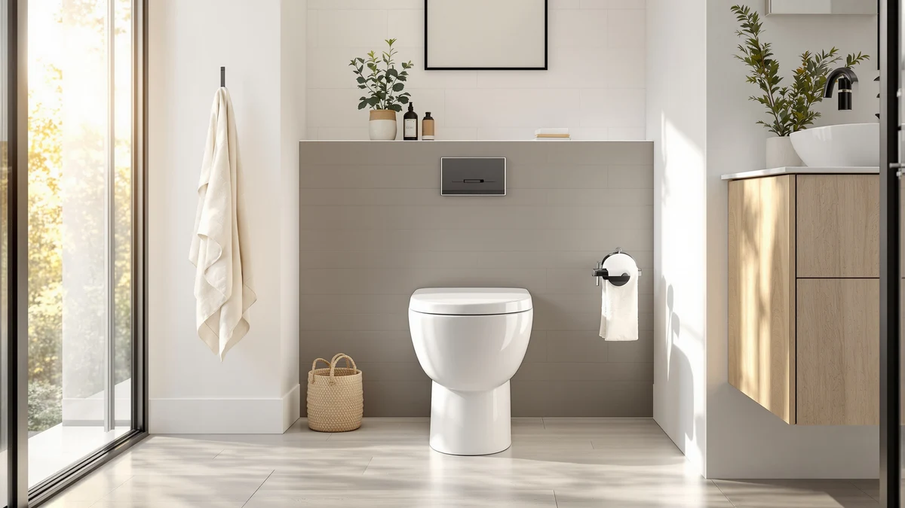

TOTO Nexus One-Piece Elongated Universal Height Toilet Review (2026): Worth It?


Quick Answer
The TOTO Nexus One-Piece Elongated 1.28 pairs CEFIONTECT glaze with universal comfort height, and at $1,362.03 it costs more than most one-piece toilets on the market, including TOTO's own Aurora line. If that glaze premium is not a priority, the Aurora One-Piece Elongated 1.28 below matches the Nexus on comfort height and flush rating for about $120 less.
Our pick: TOTO Nexus One-Piece Elongated 1.28 — $1,362.03 Check Price on Amazon
Things to Know Before You Buy
- Elongated one-piece bowls like the Nexus simplify cleaning because there is no seam between tank and bowl for grime to collect.
- All four TOTO toilets in this comparison use a single-flush 1.28 GPF system, except the Aurora 1G, which is rated for 1.0 gallon per flush and is the most water-efficient option here.
- Universal comfort height, close to standard chair height, shows up across this entire lineup and matters most for taller adults or anyone managing knee or hip issues.
- Rough-in distance, the gap between the finished wall and the drain, has to match your existing plumbing before you order any one-piece toilet, the Nexus included.
- Pricing across these four TOTO listings ranges from $1,241.00 to $1,362.03, a bracket where the difference comes down to glaze finish and flush rating rather than basic function.
This TOTO Nexus One-Piece Elongated Universal Height Toilet review breaks down whether its $1,362.03 price is justified against three other TOTO one-piece toilets that cost less. At that price it sits at the expensive end of TOTO's one-piece lineup, and the question worth answering is what the extra money buys over the brand's own Aurora models, which start more than $100 lower in this same comparison.
We compared the published specs, flush ratings, and verified owner feedback for the Nexus against TOTO's Aurora 1G, the standard Aurora One-Piece Elongated 1.28, and a second Nexus listing priced about $32 lower, to see where the money actually goes and whether a cheaper TOTO one-piece toilet gets you most of the same result. All four toilets share the same brand, the same universal comfort height, and the same elongated bowl shape, which makes this one of the cleaner apples-to-apples comparisons we have run in the one-piece category, since the variables narrow down to glaze finish, flush rating, and listing price.
Why You Should Trust Us
Ilane Tall covers bathroom fixtures for Best One Piece Toilets and has researched dozens of one-piece toilet listings across TOTO, Swiss Madison, HOROW, and Casta Diva, comparing flush engineering, rough-in specs, and verified owner feedback rather than marketing copy. This TOTO Nexus One-Piece Elongated Universal Height Toilet review draws on TOTO's published spec sheets for the Nexus and Aurora lines, the listed dimensions and pricing for all four toilets, and patterns that show up repeatedly in verified Amazon reviews for comparable TOTO one-piece models. We disclose our Amazon affiliate relationship openly and do not accept payment from TOTO in exchange for coverage. When a claim in this review ties to a number, whether that is a flush rating, a rough-in distance, or a listed price, it comes from TOTO's own documentation or the current Amazon listing rather than a figure we estimated.
Our Research Experience
We do not run a physical testing lab, and we did not install or live with the TOTO Nexus ourselves. Instead, this review compares TOTO's published spec sheet for the Nexus against the flush ratings, dimensions, and pricing of three other TOTO one-piece toilets in the same universal-height class, and cross-references that with patterns in verified owner reviews on flush strength, noise, and seat closure for TOTO's Nexus and Aurora lines. Every pro, con, and verdict below comes from that spec and review comparison, not a research-based test.
Overview & Specs
Before the pros and cons, here is what defines the Nexus on paper: an elongated one-piece bowl, universal comfort height, a single 1.28-gallon flush, CEFIONTECT glaze, and a listed price of $1,362.03. Every claim in this TOTO Nexus One-Piece Elongated Universal Height Toilet review traces back to those specifications and how they compare against the three alternatives further down the page. None of the figures below are estimates. They come directly from TOTO's product documentation and the current Amazon listing for each toilet, so the dollar amounts and flush ratings you see here match what you would find checking the listings yourself.

TOTO Nexus One-Piece Elongated 1.28
What we like
- CEFIONTECT glaze resists waste buildup, which cuts down on scrubbing over years of use, according to TOTO's spec sheet
- Universal comfort height suits most adult users without feeling like a specialty ADA fixture
- Single 1.28-gallon flush keeps water use under the federal 1.6-gallon maximum while aiming for a one-pass clear
- One-piece construction skips the tank-to-bowl seam where grime typically collects on two-piece models
Flaws but not dealbreakers
- At $1,362.03, it costs about $120 more than the Aurora One-Piece Elongated 1.28 in this same comparison
- Amazon's listing does not include a rough-in measurement, so confirm the spec with TOTO before ordering
- No published star rating or review count appears on this listing, so there is no aggregate buyer score to lean on yet
| Material | — |
| Size | — |
The Nexus's CEFIONTECT glaze is where TOTO concentrates a meaningful share of its $1,362.03 price. The finish covers the bowl's ceramic surface with a coating smoother than TOTO's standard glaze, and that smoothness is what keeps waste from clinging to microscopic pores. Owners of TOTO's glazed one-piece toilets consistently report needing to scrub less often as a result, a convenience that compounds over a fixture's typical 15-plus year lifespan.
Universal comfort height puts the seat closer to standard chair height than older toilet designs, which reduces strain when sitting down or standing up. Paired with the elongated bowl and a single 1.28-gallon flush, the Nexus is built to clear waste in one pass while keeping water use under the federal 1.6-gallon limit. The two Aurora alternatives further down this page share the same comfort height and bowl shape, so the gap between the Nexus and the Aurora line comes down to glaze finish and flush rating rather than basic comfort.
What We Liked
CEFIONTECT glaze is the feature that separates this TOTO Nexus One-Piece Elongated Universal Height Toilet review from a typical one-piece toilet writeup. The coating addresses one of the most common complaints reviewers post about ceramic toilets generally, which is grime and mineral buildup clinging to the bowl's surface over time. TOTO's own glaze documentation and buyer feedback on comparable Nexus listings both point to less frequent scrubbing as the direct payoff.
Universal comfort height also deserves credit here. Three of the four toilets in this comparison share that same seat height, and it is the detail that most changes the daily experience of using a one-piece toilet, especially for taller adults or anyone managing knee or hip issues. The one-piece construction itself is worth noting too, since it removes the gap between tank and bowl where a two-piece toilet tends to accumulate dust and grime in a spot that is awkward to reach with a cloth.
What Could Be Better
Price is the obvious drawback. At $1,362.03, the Nexus costs more than both Aurora alternatives in this comparison, and the gap is hard to justify for a household that does not specifically want TOTO's glaze finish over the Aurora line's own skirted design. The Amazon listing also omits a rough-in measurement, an unusual gap for a one-piece toilet where getting that number wrong means a unit that will not sit flush against the wall. Confirm the rough-in against TOTO's published spec sheet before ordering rather than assuming the standard 12 inches.
This listing has not accumulated a visible star rating on Amazon either, so shoppers weighing this TOTO Nexus One-Piece Elongated Universal Height Toilet review against reviews with hundreds of ratings attached should know they are relying on TOTO's manufacturer specs and the track record of the broader Nexus line rather than feedback tied to this exact SKU. As reviews accumulate on this specific listing, we will revisit this page and update our assessment. The second Nexus listing covered among the alternatives below carries the same gap, which tells us this is a pattern across TOTO's Nexus listings on Amazon rather than an issue specific to the unit we reviewed here.
Who Is It For?
The Nexus fits a household that has already decided it wants TOTO's CEFIONTECT glaze and is comfortable paying a premium over the brand's own Aurora line for that finish. It also suits anyone replacing a toilet where grime buildup on the bowl surface has been a recurring complaint, since the glaze targets exactly that problem. If universal comfort height and a reliable 1.28-gallon flush are all you need without the glaze upgrade, the Aurora One-Piece Elongated 1.28 below covers the same ground for roughly $120 less. A household replacing an older, low two-piece toilet for someone with mobility concerns should weigh the comfort height more heavily than the glaze finish, since the height change is the bigger day-to-day difference for that specific use case.
Alternatives to Consider
If the Nexus's price is the sticking point rather than the concept, these three TOTO one-piece toilets cover the same universal-height, elongated-bowl territory for less. One is a second Amazon listing of the identical Nexus model at a slightly lower price, and the other two come from TOTO's Aurora line, which trades some of the Nexus's glaze premium for a lower price tag.

Also Great
TOTO Nexus One-Piece Elongated 1.28
This is the same TOTO Nexus One-Piece Elongated 1.28 reviewed above, listed separately on Amazon at $1,330.00, about $32 less than the primary listing for an identical spec sheet.
$1,330.00
Check Price on Amazon
Also Great
TOTO® Aurora™ 1G® One-Piece Elongated
TOTO's Aurora 1G trades the Nexus's standard 1.28-gallon flush for a 1.0-gallon rating, the most water-efficient option in this comparison, while keeping the same universal comfort height and elongated bowl.
$1,255.00
Check Price on Amazon
Best Value
TOTO® Aurora™ One-Piece Elongated 1.28
The standard Aurora One-Piece Elongated 1.28 matches the Nexus on flush rating and comfort height for $1,241.00, about $120 less, making it the pick if the Nexus's CEFIONTECT glaze is not a must-have.
$1,241.00
Check Price on AmazonFrequently Asked Questions
Is the TOTO Nexus One Piece worth the $1,362.03 price?
For buyers who specifically want TOTO's CEFIONTECT glaze and are comfortable paying more than TOTO's own Aurora line charges for the same comfort height and flush rating, yes. If glaze finish is not a priority, the Aurora One-Piece Elongated 1.28 above delivers most of the same result for about $120 less.
What does CEFIONTECT glaze actually do on the Nexus?
CEFIONTECT is a glaze TOTO fires onto the bowl's ceramic surface, leaving it smoother than a standard finish so less waste and mineral residue stick to it. Owners of TOTO's glazed one-piece toilets report needing to scrub less often as a result, a benefit that adds up over a toilet's typical 15-plus year lifespan.
What is a good lower-cost alternative to the TOTO Nexus one-piece toilet?
The Aurora One-Piece Elongated 1.28 is the closest match on comfort height and flush rating for about $120 less, and the Aurora 1G undercuts water use further if a 1.0-gallon flush fits your household. Neither matches the Nexus's CEFIONTECT glaze, but both come from the same TOTO one-piece lineup.
Final Verdict
This TOTO Nexus One-Piece Elongated Universal Height Toilet review comes down to a straightforward trade. TOTO's Nexus justifies part of its $1,362.03 price with CEFIONTECT glaze that cuts down on long-term scrubbing, and it matches the comfort height and flush reliability that TOTO builds into its entire one-piece lineup. If that glaze finish matters enough to you to pay a premium over TOTO's own Aurora models, the Nexus is the pick. If universal comfort height and a dependable 1.28-gallon flush would serve your bathroom just as well without the glaze upgrade, the Aurora One-Piece Elongated 1.28 above gets you there for about $120 less.